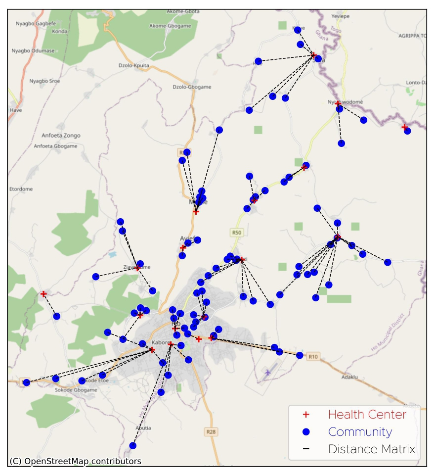

Assessing Access to Healthcare Facilities in Ho Municipal, Ghana
GeoPandas · Open Route Service API · Folium · Shapely

Problem
Ho Municipal is home to a diverse population spanning both urban and rural communities. Many of these communities face significant barriers to accessing quality healthcare, compounded by the concentration of facilities in Ho town, while leaving rural populations with limited access to essential services. This contravenes international standards stating that essential healthcare should be available to all, regardless of geographical location or socioeconomic status.
Project Objective
This project examines the current state of healthcare service delivery in Ho Municipal, with specific focus on driving distances between communities and their nearest health facilities. The study explores the distribution of both public and private healthcare providers and assesses their accessibility for different communities.
Importance
By ensuring equitable access to healthcare services in Ho Municipal, this project helps improve health outcomes and reduce disparities. This aligns with the global health agenda promoting universal health coverage. Findings are also relevant to other areas of Ghana and low- and middle-income countries facing similar challenges.
Approach
Interactive map — community-to-facility links
The analysis used two vector datasets in ESRI Shapefile format: Communities (Origins) and Health Facilities (Destinations). GeoPandas was used to access and preprocess the data, including removing duplicates, correcting inaccurate entries, and formatting table headings.
Driving distances were computed using the Open Route Service (ORS) Distance Matrix API, which required coordinate pairs in WGS 84 format extracted from the GeoDataFrame geometry columns. The minimum distance from each community to any facility was then extracted, with associated destination coordinates used to retrieve facility names.
A new GeoDataFrame was constructed containing origin name, origin coordinates, destination name, destination coordinates, and minimum distance. Lines connecting each origin to its nearest destination were built using Shapely, and results were visualised with Matplotlib and Folium.
Results and Conclusion
While the average minimum distance of 2.88 km seems reasonable, the standard deviation of 2.43 km, representing 84% of the mean, indicates a wide spread. Some communities are fortunately close (as little as 0.02 km), while others must travel up to 11.02 km to reach the nearest facility, creating serious barriers to timely care.
The WHO recommends healthcare services be available within 5 km of any community. A significant number of communities in Ho Municipal fail to meet this standard. These findings highlight the need for a holistic approach to healthcare delivery and support the SDG goal of universal health access by 2030.
Origin-destination routing